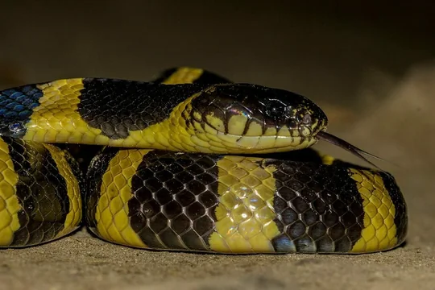
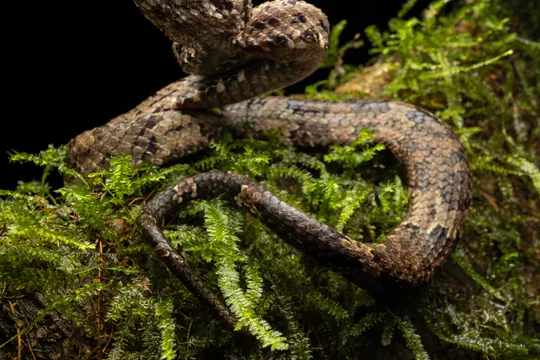
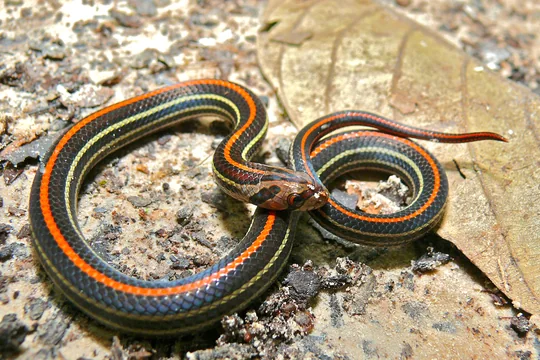
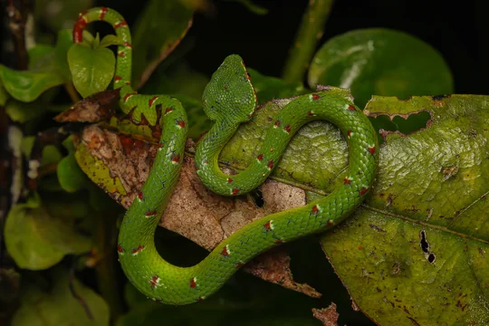
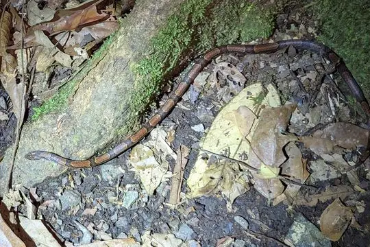
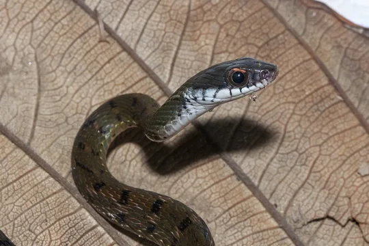
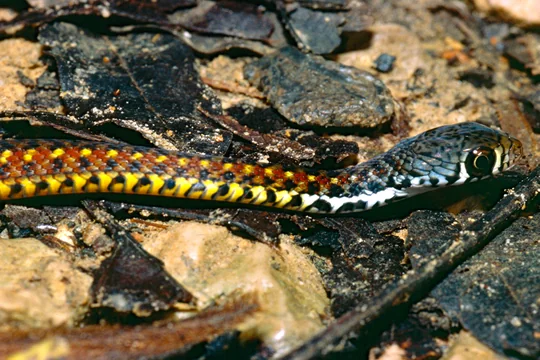
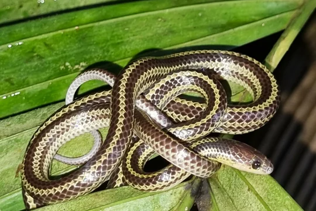
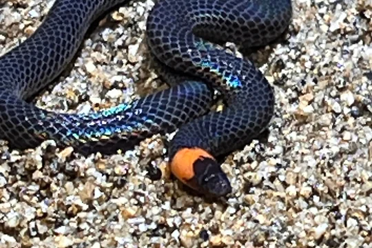

Snakes of Brunei
14 living snake species are recorded in Brunei in SnakeList: 5 venomous and 9 non-venomous, from 5 families.
- 14living species
- 5families
Danger to people · tap a number to show only those snakes
- 0giant constrictors
Harmful = dangerously venomous + giant constrictors. Harmless = not venomous and not a giant constrictor. Mildly venomous snakes have no serious bites to people documented. Any snake can bite.
These totals count the unique living snake species SnakeList records in Brunei. A species counts if it is recorded anywhere in the country, so not every snake lives in every part of it.
In SnakeList’s checklist filters
How many of the 14 living species here each filter in the SnakeList app picks out – tap a number to show only those snakes.
Snake family4 types, 5 families
Type
Family
Habitats11 habitat groups
Habitats are estimated from where each snake is recorded and what kind of snake it is, as in the app; a snake can count in several.
Characteristics5 venomous, 0 constrictors
- 0constrictors
Constrictor and Non-constrictor count only snakes whose family or genus is documented as constricting or not; the rest are not documented.
Other filters0 popular, 1 rare
- 0popular
- 0invasive
- 0extinct
Species
Showing 14 species

Banded KraitBungarus fasciatus Blunthead Slug SnakeAplopeltura boa
Blunthead Slug SnakeAplopeltura boa
Borneo Pit ViperCraspedocephalus borneensis
Eight-striped Kukri SnakeOligodon octolineatus Gold-ringed Cat Snake (dendrophila)Boiga dendrophila
Gold-ringed Cat Snake (dendrophila)Boiga dendrophila
North Philippine Temple PitviperTropidolaemus subannulatus Paradise Tree SnakeChrysopelea paradisi
Paradise Tree SnakeChrysopelea paradisi
Ringed Kukri SnakeOligodon annulifer
Specklebelly KeelbackRhabdophis chrysargos
Spotted KeelbackXenochrophis maculatus
Three-Banded Bridled SnakeLycodon tristrigatus Triangle KeelbackXenochrophis trianguligerus
Triangle KeelbackXenochrophis trianguligerus
White-collared Reed SnakePseudorabdion albonuchalis- No photo yetAcrochordus dubius
No snakes in Brunei match.
Brunei’s snakes in numbers
- Families: Colubridae 9, Viperidae 2, Acrochordidae 1, Elapidae 1, Pareidae 1.
- 1 is recorded in no other country or territory in SnakeList: Specklebelly Keelback.
How precisely they are recorded
Of the 14 living species recorded in Brunei, 6 are recorded by district in SnakeList’s data; 8 are recorded only for Brunei as a whole, so the district pages list them as possible rather than recorded. SnakeList records each species by district, not by exact spot, so a species listed for a district may live in only part of it.
Districts
The districts where SnakeList records snakes, with how many living species are recorded in each. Each page has its species, venomous snakes, families, the species found only there, its cities and neighbours.
- Brunei-Muara 4 species
- Temburong 4 species
No place matches that.
Cities
Its biggest cities, biggest first. SnakeList records snakes by district, not by city, so each city page shows the species recorded in its district and, separately, those only possible there - not species confirmed in the city.
- Bandar Seri Begawan Brunei-Muara
No place matches that.